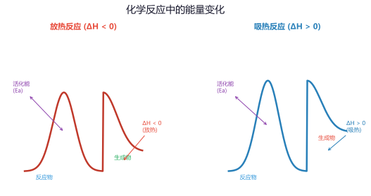
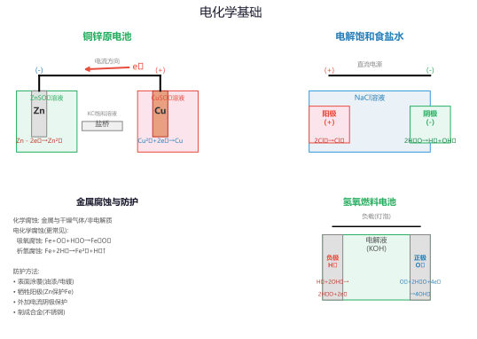
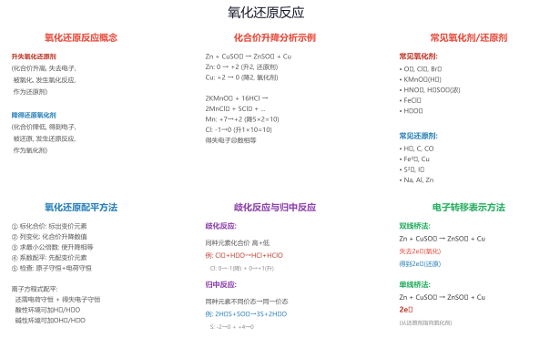
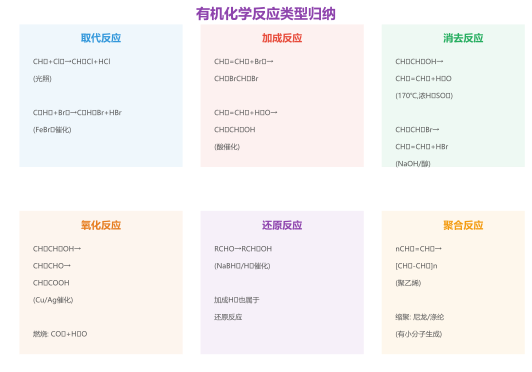
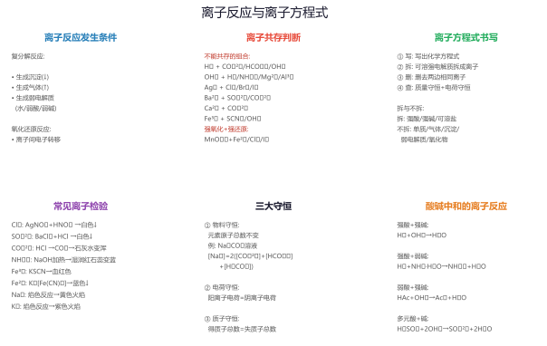

专题一：化学反应与能量
焓变·热化学方程式·盖斯定律热化学方程式：表示化学反应中能量变化的化学方程式。书写要点：
① 必须标注物质状态（s、l、g、aq）
② ΔH的"+""-"与反应条件有关，放热反应ΔH<0，吸热反应ΔH>0
③ ΔH与化学计量数成正比（计量数加倍，ΔH也加倍）
④ 须标注温度和压强（若为25°C、101kPa可不标）
例：H₂(g) + ½O₂(g) → H₂O(l) ΔH = -285.8 kJ/mol
2H₂(g) + O₂(g) → 2H₂O(l) ΔH = -571.6 kJ/mol
盖斯定律（Hess's Law）：
化学反应的反应热只与反应的始态（反应物）和终态（产物）有关，与反应的途径无关。
即：ΔH = ΣΔH₁ + ΔH₂ + ΔH₃ + ...
应用技巧：将已知热化学方程式进行加减组合，消去中间产物，得到目标方程式的ΔH。
键能与反应热的关系：
ΔH = 反应物的总键能 - 生成物的总键能（吸收的能量 — 放出的能量）
断键吸热（ΔH>0），成键放热（ΔH<0）
例：H₂(g) + Cl₂(g) → 2HCl(g)，已知键能H-H 436 kJ/mol、Cl-Cl 243 kJ/mol、H-Cl 432 kJ/mol
ΔH = (436+243) - (2×432) = -185 kJ/mol（放热反应）

(1) C(s) + O₂(g) → CO₂(g) ΔH₁ = -393.5 kJ/mol
(2) CO(g) + ½O₂(g) → CO₂(g) ΔH₂ = -283.0 kJ/mol
求：C(s) + ½O₂(g) → CO(g) 的ΔH。
盖斯定律应用：将(1)减去(2)：
[C(s) + O₂(g) → CO₂(g)] - [CO(g) + ½O₂(g) → CO₂(g)]
= C(s) + O₂(g) - CO(g) - ½O₂(g) → CO₂(g) - CO₂(g)
整理得：C(s) + ½O₂(g) → CO(g)
ΔH = ΔH₁ - ΔH₂ = (-393.5) - (-283.0) = -110.5 kJ/mol
答案：ΔH = -110.5 kJ/mol，C不完全燃烧生成CO是放热反应。
方法总结：当目标反应可由已知反应加减得到时，ΔH也相应加减。注意符号方向——反应方向改变则ΔH符号也要改变。
ΔH = 反应物键能总和 - 生成物键能总和
设N-H键能为x kJ/mol
-92.4 = (945.4 + 3×436) - (6x)
-92.4 = (945.4 + 1308) - 6x
-92.4 = 2253.4 - 6x
6x = 2253.4 + 92.4 = 2345.8
x = 391.0 kJ/mol
答案：N-H键的键能约为391.0 kJ/mol。
注意：生成物NH₃含有3个N-H键，2分子NH₃共有6个N-H键，所以生成物键能=6x。
专题二：化学反应速率与平衡
速率方程·化学平衡·平衡移动化学反应速率：
v = Δc/Δt（单位：mol/(L·s) 或 mol/(L·min)）
影响因子：浓度（增大浓度，速率加快）、温度（升高温度，速率加快，阿伦尼乌斯公式：k=A·e⁻ᴱᵃ/ᴿᵀ）、催化剂（降低活化能，同等倍率加快正逆反应速率）、压强（对有气体参与的反应，增大压强等于增大浓度）
注意：反应速率用平均速率而非瞬时速率表示；固体和纯液体的浓度视为常数，不参与速率方程。
化学平衡常数：
勒夏特列原理：如果改变影响平衡的条件之一（浓度、温度、压强），平衡将向着减弱这种改变的方向移动。
对于aA+bB⇌cC+dD，K = [C]ᶜ[D]ᵈ/([A]ᵃ[B]ᵇ)
• K只与温度有关（温度变K变，温度不变K不变）
• K越大，反应进行越完全（正反应倾向越大）
• 通过比较Q与K判断反应方向：Q>K逆向移动，Q=K平衡，Q
• 增大反应物浓度 → 正向移动；减小生成物浓度 → 正向移动
• 升高温度 → 向吸热方向移动；降低温度 → 向放热方向移动
• 增大压强 → 向气体分子数减少的方向移动；减小压强 → 向气体分子数增多的方向移动
(1) 增大压强，平衡如何移动？为什么？
(2) 升高温度，平衡如何移动？K值如何变化？
(3) 若在恒温恒容条件下通入N₂，N₂的转化率将如何变化？H₂的转化率将如何变化？
(1) 增大压强，平衡正向移动（向气体分子数减少的方向——左边4分子气体，右边2分子，正反应方向气体分子数减少）。
(2) 升高温度，平衡逆向移动（正反应放热，逆反应吸热，升温有利于吸热方向）。K值减小——因为K = k正/k逆，升温时k正和k逆都增大但k逆增大的倍数更大（吸热方向受温度影响更大）。
(3) 在恒温恒容下通入N₂（增大N₂浓度），平衡正向移动。N₂的转化率降低（虽然转化量增加，但初始量也增加，转化率=转化量/初始量，整体分母增加更多），H₂的转化率升高。
一般规律：增大一种反应物的浓度，该反应物自身转化率降低，其他反应物的转化率升高。
(1) 求该温度下的平衡常数K。
(2) 若保持温度不变，将H₂O的初始投料增加到0.6 mol，CO转化率变为多少？
(1) 初始浓度：[CO]=0.1 mol/L，[H₂O]=0.15 mol/L
CO转化50% → Δ[CO]=0.05 mol/L
三段式法：
| | CO | H₂O | CO₂ | H₂ |
|-----------|---|---|---|---|
| 起始(mol/L)| 0.10 | 0.15 | 0 | 0 |
| 转化(mol/L)| 0.05 | 0.05 | 0.05 | 0.05 |
| 平衡(mol/L)| 0.05 | 0.10 | 0.05 | 0.05 |
K = [CO₂][H₂]/([CO][H₂O]) = 0.05×0.05/(0.05×0.10) = 0.5
(2) 设CO转化浓度为x（mol/L），H₂O初始浓度=0.3 mol/L
平衡时：[CO]=0.1-x，[H₂O]=0.3-x，[CO₂]=x，[H₂]=x
K = x²/[(0.1-x)(0.3-x)] = 0.5
解得：x=0.075（另一根x=0.3不合题意）
CO转化率 = 0.075/0.10 × 100% = 75%
结论：增大反应物H₂O的浓度，CO转化率从50%提高到75%——证明了勒夏特列原理的应用。
专题三：电化学基础
原电池·电解池·金属腐蚀原电池（化学能→电能）：
构成条件：①两个活动性不同的电极 ②电解质溶液 ③形成闭合回路 ④自发的氧化还原反应
负极（活泼金属）→ 氧化反应，电子流出（e⁻→外电路），负极溶解减重
正极（不活泼金属/石墨）→ 还原反应，电子流入（e⁻←外电路），正极有气体析出或增重
电流方向：正极→外电路→负极（与外电路电子流向相反）
电解池（电能→化学能）：
阳极（接电源正极）→ 氧化反应（阴离子放电），活性阳极自身溶解
阴极（接电源负极）→ 还原反应（阳离子放电）
放电顺序（阴离子）：S²⁻ > I⁻ > Br⁻ > Cl⁻ > OH⁻ > 含氧酸根 > F⁻
放电顺序（阳离子）：Ag⁺ > Fe³⁺ > Cu²⁺ > H⁺(酸) > Fe²⁺ > Zn²⁺ > H⁺(水) > Al³⁺ > Mg²⁺ > Na⁺
金属腐蚀与防护：
• 化学腐蚀：金属与干燥气体（O₂、Cl₂）直接反应
• 电化学腐蚀：钢铁在潮湿空气中形成原电池——Fe为负极被氧化，C为正极
• 防护方法：覆盖保护层（涂漆/镀锌）、牺牲阳极法（连接更活泼的金属如Zn）、外加电流法（将被保护金属接电源负极）

(1) 判断正负极，写出电极反应式。
(2) 若导线中通过0.2 mol电子，求负极减少的质量。
(3) 若将稀H₂SO₄换成CuSO₄溶液，正极有什么现象？
(1) 负极：Zn（较活泼，被氧化）——Zn - 2e⁻ → Zn²⁺（氧化反应，Zn溶解）
正极：Cu（较不活泼）——2H⁺ + 2e⁻ → H₂↑（还原反应，产生气泡）
总反应：Zn + 2H⁺ → Zn²⁺ + H₂↑
(2) Zn - 2e⁻ → Zn²⁺，每1 mol Zn失2 mol e⁻
通过0.2 mol电子，溶解的Zn = 0.2/2 = 0.1 mol
减少的质量 = 0.1 × 65 = 6.5 g
(3) 将H₂SO₄换成CuSO₄溶液：
正极：Cu²⁺ + 2e⁻ → Cu↓（Cu²⁺得电子析出Cu单质）
现象：正极（Cu片）表面有红色固体析出，溶液蓝色变浅；负极Zn不断溶解。
总反应：Zn + Cu²⁺ → Zn²⁺ + Cu↓（这是一个自发反应，也是原电池的工作原理）
注意：正极反应取决于电解质溶液中的阳离子，不一定是H⁺放电。
(1) 写出两极的电极反应式和总反应方程式。
(2) 若电解后得到1 mol NaOH，理论上转移多少电子？
(3) 从两极分别得到什么气体？如何检验？
(1) 阳极（接电源正极）：2Cl⁻ - 2e⁻ → Cl₂↑（氧化反应，产生黄绿色气体）
阴极（接电源负极）：2H₂O + 2e⁻ → H₂↑ + 2OH⁻（还原反应，放出H₂，产生OH⁻）
总反应：2NaCl + 2H₂O ─[电解]→ 2NaOH + H₂↑ + Cl₂↑
(2) 由总反应可知，每生成2 mol NaOH转移2 mol e⁻，即n(e⁻)=n(NaOH)。
生成1 mol NaOH，转移1 mol电子（约96500 C电量）。
(3) 阳极：Cl₂（黄绿色有刺激性气味），用湿润的淀粉碘化钾试纸检验（变蓝：Cl₂+2I⁻→I₂+2Cl⁻，I₂使淀粉变蓝）。
阴极：H₂（无色无味），点燃有淡蓝色火焰（或验纯后点燃，产生水珠）。
阳离子交换膜的作用：只允许Na⁺通过到阴极室，阻止Cl₂进入阴极室与NaOH反应，同时阻止H₂与Cl₂混合爆炸。
A．Zn片和Zn片插入稀H₂SO₄ B．Cu片和C棒插入酒精
C．Fe片和Cu片插入稀H₂SO₄ D．Zn片和Cu片插入稀H₂SO₄（不连接导线）
专题四：氧化还原反应
化合价·电子转移·配平·强弱规律基本概念：
• 氧化剂：得电子，化合价降低，被还原（发生还原反应），生成还原产物
• 还原剂：失电子，化合价升高，被氧化（发生氧化反应），生成氧化产物
记忆口诀："升失氧、降得还"——化合价升高→失电子→被氧化（作还原剂）；化合价降低→得电子→被还原（作氧化剂）
氧化还原反应方程式的配平（化合价升降法）：
① 标出发生变化的元素的化合价
② 计算化合价升降的最小公倍数，确定系数
③ 用观察法配平其他物质的系数
④ 检查原子守恒和电荷守恒
氧化性/还原性强弱比较：
• 由方程式判断：氧化剂 + 还原剂 → 还原产物 + 氧化产物，则氧化性：氧化剂 > 氧化产物；还原性：还原剂 > 还原产物
• 由周期律判断：同周期从左到右，单质氧化性增强；同主族从上到下，单质氧化性减弱
• 由反应条件判断：反应条件越容易，氧化性或还原性越强（如F₂在暗处即可与H₂反应，Cl₂需光照或加热，Br₂需持续加热）

KMnO₄ + HCl(浓) → KCl + MnCl₂ + Cl₂↑ + H₂O
配平步骤：
① 标化合价：KMn⁺⁷O₄ + HCl⁻¹ → KCl + Mn⁺²Cl₂ + Cl₂⁰ + H₂O
② 找升降：Mn从+7→+2，降低5；Cl从-1→0，升高1（但Cl₂含2个Cl原子，每生成1个Cl₂分子升高2）
③ 最小公倍数：5和2的最小公倍数为10 → Mn系数为2，Cl₂系数为5
④ 写系数：2KMnO₄ + 16HCl → 2KCl + 2MnCl₂ + 5Cl₂↑ + 8H₂O
⑤ 验证：左边K=2、Mn=2、O=8、H=16、Cl=16；右边K=2、Mn=2、O=8、H=16、Cl=2+4+10=16 ✓
双线桥：
KMnO₄ → MnCl₂：线下标"得5e⁻" ×2（Mn从+7→+2）
HCl → Cl₂：线下标"失e⁻" ×10（每Cl从-1→0，共10个Cl原子被氧化）
注意：16个HCl分子中只有10个被氧化（化合价变化），另外6个体现酸性（生成KCl和MnCl₂中的Cl⁻）。
① 2FeCl₃ + 2KI → 2FeCl₂ + 2KCl + I₂
② 2FeCl₂ + Cl₂ → 2FeCl₃
③ 2KMnO₄ + 16HCl → 2KCl + 2MnCl₂ + 5Cl₂↑ + 8H₂O
(1) 判断Fe³⁺、I₂、Cl₂、MnO₄⁻的氧化性强弱顺序。
(2) 判断I⁻、Fe²⁺、Cl⁻、Mn²⁺的还原性强弱顺序。
(1) 氧化性判断：氧化剂 > 氧化产物
①中氧化剂Fe³⁺ > 氧化产物I₂
②中氧化剂Cl₂ > 氧化产物Fe³⁺
③中氧化剂MnO₄⁻ > 氧化产物Cl₂
综合顺序：MnO₄⁻ > Cl₂ > Fe³⁺ > I₂
(2) 还原性判断：还原剂 > 还原产物
①中还原剂I⁻ > 还原产物Fe²⁺
②中还原剂Fe²⁺ > 还原产物Cl⁻
③中还原剂Cl⁻ > 还原产物Mn²⁺
综合顺序：I⁻ > Fe²⁺ > Cl⁻ > Mn²⁺
应用：由氧化性顺序可知，Cl₂可以氧化Fe²⁺为Fe³⁺（反应②成立），但I₂不能氧化Fe²⁺（因为氧化性Fe³⁺>I₂，反应方向是Fe³⁺氧化I⁻）。
专题五：有机化学反应
反应类型·官能团转化·合成路线有机反应基本类型：
取代反应：有机物分子中的原子或原子团被其他原子或原子团替代
例：CH₄ + Cl₂ ─[光照]→ CH₃Cl + HCl（卤代反应）
C₆H₆ + Br₂ ─[FeBr₃]→ C₆H₅Br + HBr（苯环上的取代）
CH₃COOH + CH₃CH₂OH ⇌[浓H₂SO₄/△] CH₃COOCH₂CH₃ + H₂O（酯化反应）
加成反应：不饱和键（双键/三键/苯环）打开，与其他原子或原子团结合
例：CH₂=CH₂ + Br₂ → CH₂BrCH₂Br（与卤素加成）
CH₂=CH₂ + H₂O \overset{\text{H₃PO₄}}{\underset{300°C}{→}} CH₃CH₂OH（与水加成，工业制乙醇）
CH≡CH + 2H₂ ─[Ni/△]→ CH₃CH₃（不饱和键的加氢还原）
消去反应：从一个有机物分子中脱去一个小分子（H₂O、HX等），生成不饱和键
例：CH₃CH₂OH ─[浓H₂SO₄/170°C]→ CH₂=CH₂↑ + H₂O（分子内脱水成烯）
CH₃CH₂Br + NaOH ─[醇/△]→ CH₂=CH₂↑ + NaBr + H₂O（卤代烃的消去）
官能团转化路线：
卤代烃 ⇌[水解,消去] 醇 ⇌[氧化,还原] 醛 ⇌[氧化,还原] 羧酸 ⇌[酯化,水解] 酯

CH₃CH₂Br → CH₃CH₂OH → CH₃CHO → CH₃COOH → CH₃COOCH₂CH₃
并判断各步反应类型。
① CH₃CH₂Br + NaOH ─[水/△]→ CH₃CH₂OH + NaBr ——取代反应（卤代烃的水解）
注意：若用NaOH/醇/△则发生消去反应生成乙烯，产物不同。
② 2CH₃CH₂OH + O₂ ─[Cu/Ag/△]→ 2CH₃CHO + 2H₂O ——氧化反应（催化氧化）
乙醇先脱氢生成乙醛：CH₃CH₂OH ─[Cu/△]→ CH₃CHO + H₂（Cu的作用是催化氧化）
③ 2CH₃CHO + O₂ ─[催化剂]→ 2CH₃COOH ——氧化反应（醛基被氧化为羧基）
④ CH₃COOH + CH₃CH₂OH ⇌[浓H₂SO₄/△] CH₃COOCH₂CH₃ + H₂O ——取代反应（酯化反应，属于取代反应的一种）
核心路线：卤代烃→醇→醛→羧酸→酯（官能团逐步转化的经典路线）
推理过程：
① A的分子式C₄H₈O₂，在稀酸下水解→A是酯（RCOOR'）
② B能发生银镜反应 → B含有醛基。B可能是：HCOOH（甲酸，能银镜）或CH₃CH₂CHO（丙醛），但B是水解产物之一，作为酯的一部分，B可能是甲酸或含有醛基的化合物。
③ C不能发生催化氧化 → C是叔醇（即与-OH相连的C上无H原子）或C不是醇（但酯水解产物为醇或酸，B能银镜说明B可能是甲酸，C是醇）。若C是叔醇（不能氧化），C可以是(CH₃)₃COH（叔丁醇）。
④ 结合分子式C₄H₈O₂，A为HCOOC(CH₃)₃（甲酸叔丁酯）
验证：HCOOC(CH₃)₃ + H₂O ─[H⁺]→ HCOOH + (CH₃)₃COH
B(HCOOH)能发生银镜反应：HCHO... 不对，甲酸HCOOH也能发生银镜反应（含有醛基结构）。
C[(CH₃)₃COH]是叔醇，没有α-H，不能被催化氧化。
答案：HCOOC(CH₃)₃（甲酸叔丁酯）
专题六：离子方程式与综合
离子方程式书写·正误判断·综合应用离子方程式书写规则：
• 可溶性强电解质写离子（强酸、强碱、可溶性盐）
• 弱电解质、沉淀、气体、单质、氧化物写化学式
• 微溶物作反应物且澄清时写离子，作产物时写化学式
• 守恒检查：原子守恒、电荷守恒、得失电子守恒
常见离子方程式正误判断：
① 看是否符合事实（反应能否发生、产物是否正确）
② 看拆分是否正确（弱电解质、沉淀、气体是否拆为离子）
③ 看是否守恒（原子、电荷、电子转移）——这是最常见的设错方式
④ 看系数是否最简（如H⁺+OH⁻→H₂O是最简形式）
与量有关的离子方程式：
• 少量CO₂通入NaOH溶液：CO₂ + 2OH⁻ → CO₃²⁻ + H₂O
• 过量CO₂通入NaOH溶液：CO₂ + OH⁻ → HCO₃⁻
• Ca(HCO₃)₂与足量NaOH反应：Ca²⁺ + 2HCO₃⁻ + 2OH⁻ → CaCO₃↓ + CO₃²⁻ + 2H₂O
• Ca(HCO₃)₂与少量NaOH反应：Ca²⁺ + HCO₃⁻ + OH⁻ → CaCO₃↓ + H₂O
核心："谁少量谁为1"——以少量物质的化学计量数为基准。

(1) Na和H₂O反应：Na + H₂O → Na⁺ + OH⁻ + H₂↑
(2) 铁和稀盐酸反应：2Fe + 6H⁺ → 2Fe³⁺ + 3H₂↑
(3) Cu(OH)₂和盐酸反应：OH⁻ + H⁺ → H₂O
(4) Ba(OH)₂和H₂SO₄反应：Ba²⁺ + 2OH⁻ + 2H⁺ + SO₄²⁻ → BaSO₄↓ + 2H₂O
(1) 错误。原子不守恒：左边1个O，右边1个O，但左边2个H，右边却有3个H（Na⁺+OH⁻+H₂↑→H：OH有1+H₂有2=3H）。
改正：2Na + 2H₂O → 2Na⁺ + 2OH⁻ + H₂↑
(2) 错误。Fe与稀盐酸/稀H₂SO₄反应生成Fe²⁺（不是Fe³⁺）。强氧化性酸如浓HNO₃才生成Fe³⁺。
改正：Fe + 2H⁺ → Fe²⁺ + H₂↑
(3) 错误。Cu(OH)₂是难溶性弱碱，不能拆为离子。
改正：Cu(OH)₂ + 2H⁺ → Cu²⁺ + 2H₂O
(4) 正确。Ba(OH)₂和H₂SO₄都是强电解质可拆，BaSO₄是沉淀不能拆，H₂O是弱电解质不能拆。原子守恒、电荷守恒均满足。
(1) 向NaHSO₄溶液中逐滴滴加Ba(OH)₂溶液至恰好中和。
(2) 向明矾KAl(SO₄)₂溶液中滴加Ba(OH)₂溶液至SO₄²⁻恰好完全沉淀。
(1) 恰好中和 → H⁺恰好完全被OH⁻中和
NaHSO₄ = Na⁺ + H⁺ + SO₄²⁻（在溶液中完全电离）
"恰好中和"即H⁺和OH⁻恰好完全反应
离子方程式：H⁺ + SO₄²⁻ + Ba²⁺ + OH⁻ → BaSO₄↓ + H₂O
整理：H⁺ + SO₄²⁻ + Ba²⁺ + OH⁻ → BaSO₄↓ + H₂O
但此式虽正确，不是最简整数比！正确书写：
关键：确定物质的量之比。n(NaHSO₄):n(Ba(OH)₂)=1:1
H⁺ + SO₄²⁻ + Ba²⁺ + OH⁻ → BaSO₄↓ + H₂O
(2) 向明矾中加Ba(OH)₂至SO₄²⁻完全沉淀
KAl(SO₄)₂ = K⁺ + Al³⁺ + 2SO₄²⁻
要使SO₄²⁻完全沉淀，需要2个Ba²⁺ → 需2个Ba(OH)₂
2Ba(OH)₂ = 2Ba²⁺ + 4OH⁻
Al³⁺ + 4OH⁻ → AlO₂⁻ + 2H₂O（OH⁻过量，Al³⁺生成偏铝酸盐）
总方程式：Al³⁺ + 2SO₄²⁻ + 2Ba²⁺ + 4OH⁻ → AlO₂⁻ + 2BaSO₄↓ + 2H₂O
加上K⁺：KAl(SO₄)₂ + 2Ba(OH)₂ → 2BaSO₄↓ + KAlO₂ + 2H₂O
注意：区分"恰好中和"（以H⁺/OH⁻为准）和"SO₄²⁻刚好沉淀完全"（以Ba²⁺/SO₄²⁻为准），二者所需Ba(OH)₂的量不同。
A．强酸性溶液：K⁺、Fe²⁺、Cl⁻、NO₃⁻
B．无色溶液：Cu²⁺、NH₄⁺、Cl⁻、SO₄²⁻
C．强碱性溶液：Na⁺、K⁺、CO₃²⁻、AlO₂⁻
D．含大量Fe³⁺的溶液：Na⁺、I⁻、SO₄²⁻、Cl⁻